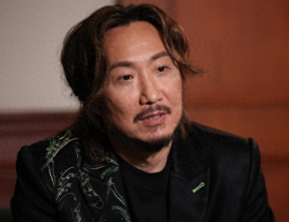
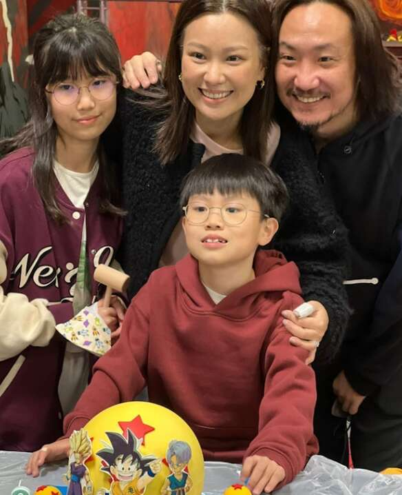
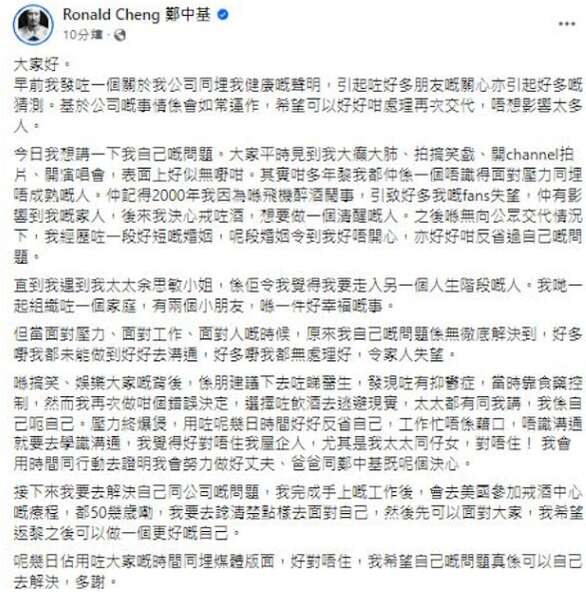
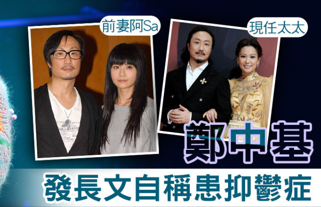
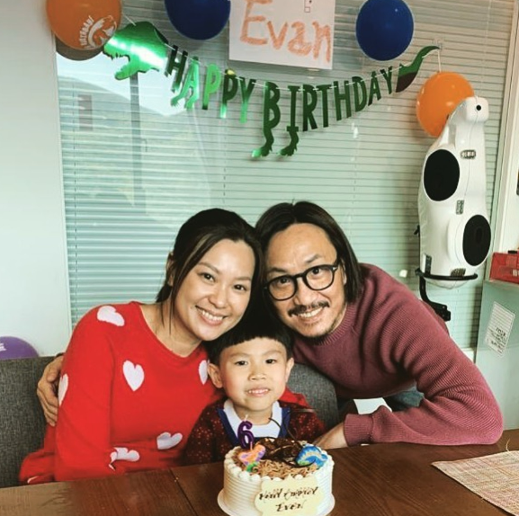
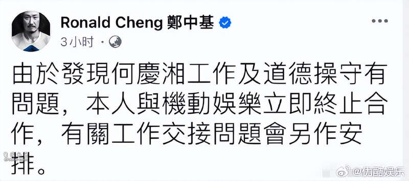
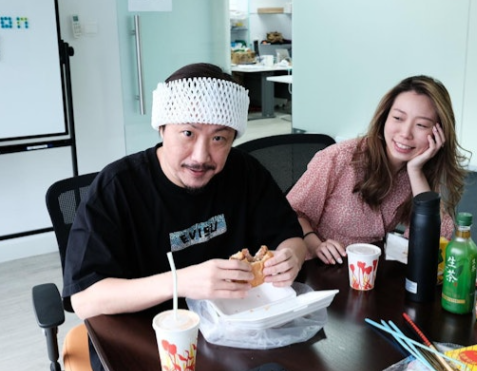
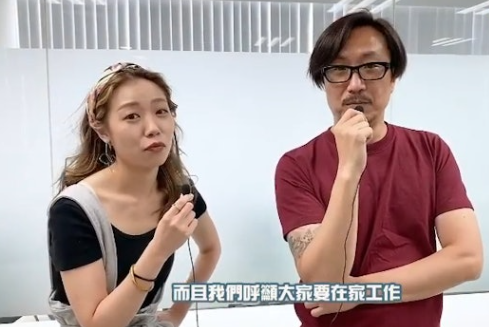
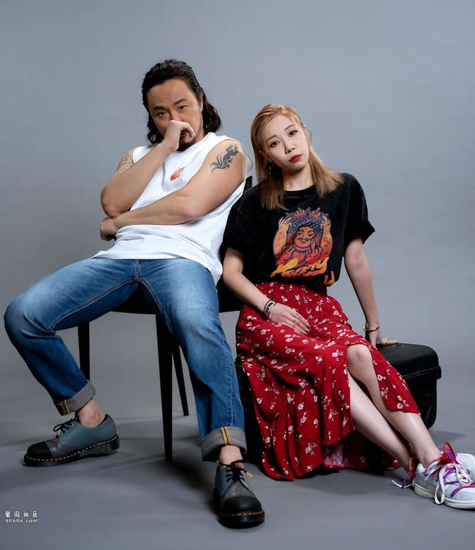
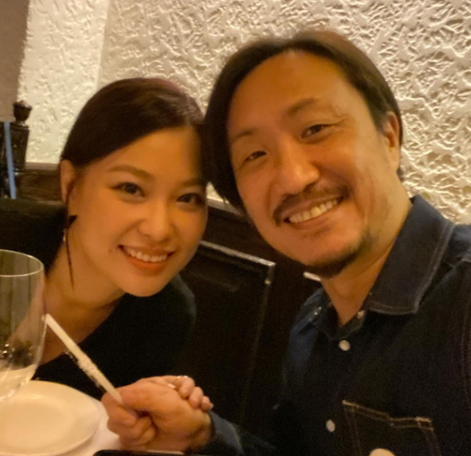

8月6日，郑中基发文公开退圈的原因，患上抑郁症要到美国接受戒酒治疗。

郑中基在声明中表示，大家看他经常疯疯癫癫、爱搞笑，其实多年来不成熟而且不懂得应对压力，2000年在飞机上酒后闹事令粉丝失望，后来经历的短暂婚姻让他十分不开心，也反省自己的问题，直到遇见太太余思敏，组织一个家庭才感觉到幸福。

郑中基坦言不懂得如何应对压力，没有好好沟通和处理令家人失望，后来看了医生确诊抑郁症，当时靠吃药控制，仍旧喝酒逃避现实，到现在终于爆发了，反省几天后意识到工作忙不是借口，不懂沟通就要学习，对不起家人和太太。

郑中基宣布太太要陪他去美国参加戒酒疗程，在此之前会处理公司和自己的问题，想清楚如何面对大家，做回一个更好的自己，用行动证明自己是好丈夫及好父亲。

据悉，郑中基最近在台北完成演唱会，9月28和29日计划在高雄开唱，门票都卖完了，却在8月3日发文宣布退圈，解释是健康和情绪问题。

郑中基矛头直指经纪人何庆湘，指责其工作及道德操守有问题，与之解除十多年的合作关系，而事先并没有告诉家人，太太当天还分别艾特了郑中基和经纪人。

郑中基这篇长文回应，只说酗酒患上抑郁症才不得不离开演艺圈，却没有解释为什么指控经纪人，两人之间发生了什么事？目前无从得知。

据悉，两人过去合作十分愉快，而这次解除合同，其实是郑中基开除经纪人，公司的大股东是郑中基，经纪人只不过是帮他打工。

香港主持人陈志云和李婉华最近直播谈及此事，他们爆料郑中基和经纪人的关系很密切，何庆湘平时很爱出镜，常常自己捧自己，超越了经纪人的界限。
陈志云强调自己没说何庆湘，指有的员工或助理仰慕老板，爱上老板也是常见的。
又表示听说何庆湘卖力工作，但只帮郑中基接工作，郑太余思敏的工作一律不接。

简而言之，陈志云认为何庆湘被开除和郑中基太太有很大关系，他怒斥经纪人的文章，可能是太太代笔发布的，现在两口子要去美国，而非留在香港戒酒，让人浮想联翩。

值得一提的是，郑中基这次还cue了前妻阿Sa，暗示抑郁症与阿Sa有关联，有没有关联估计只有两人清楚，但时隔十多年还要cue对方，令人无语。
Advertisements